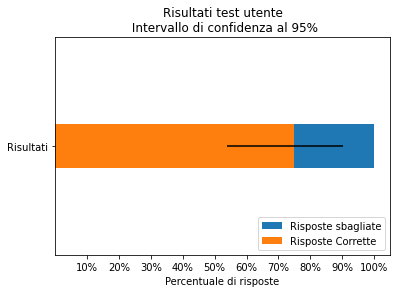

In una realtà come quella di oggi, in cui si producono sempre più contenuti digitali per un pubblico sempre più ampio che reagisce prestando sempre meno attenzione alle informazioni che riceve e caratterizzata dall'avvento di canzoni più brevi e serie TV, è vero che le persone preferiscono anche film più brevi? Questa considerazione ci ha guidati nella realizzazione di questo progetto e ci ha permesso di determinare la seguente domanda di ricerca: i film più brevi ricevono generalmente voti migliori?
L'obiettivo della visualizzazione consiste dunque nell'indagare la correlazione esistente tra il rating dei film e la loro durata, dati entrambi ottenuti dal sito ufficiale di IMDb.
La prima fase di esplorazione dati è stata realizzata per osservare la percentuale di film all'interno del dataset.
Di seguito focalizzeremo la nostra attenzione sulle due variabili di interesse per il nostro obiettivo presenti nel dataset.
Per prima cosa abbiamo preso in considerazione solo i film usciti durante l'anno 2021, e ne abbiamo ristretto il campo selezionando solo i film che hanno ottenuto un minimo di 15000 voti.
A questo punto, abbiamo realizzato due violin plot per analizzarne nel dettaglio la distribuzione. A sinistra osserviamo il violin plot relativo alla variabile 'runtimeMinutes', a destra invece il violin plot relativo alla variabile 'averageRating'.
La visualizzazione consiste in uno scatter plot avente sull'asse x la durata in minuti dei film e sull'asse y la media dei voti ottenuti su IMDb. Come si può notare dallo scatter plot c'è una leggera correlazione, il valore di correlazione corrisponde a 0.4, fra la durata in minuti e il rating ottenuto. In particolare la correlazione è contraria a quella che ci aspettavamo inizialmente, ovvero che all'aumentare dei minuti il rating medio dei Film aumenta leggermente.
L'area dei punti indicano il numero di voti ottenuti su IMDb. Le dimensioni sono calcolate in base all'area e non in base al diametro. Le righe grigie rappresentano rispettivamente la media dei valori sui due assi, mentre le fasce azzurre rappresentano la deviazione standard dei valori sui due assi.
In conclusione, le aspettative iniziali riguardanti l'obiettivo del progetto sono state ribaltate. Inizialmente prospettavamo che all'aumentare dei minuti di un film il rating peggiorasse ed invece, come si può notare dalla visualizzazione di cui sopra, all'aumentare della durata del film il rating tende a salire leggermente, con una correlazione pari a 0.4.
Il processo di raccolta dati è avvenuto scaricando i dataset dal sito web di IMDb.
Il processo di pulizia dei dati è avvenuto tramite analisi effettuate utilizzando le librerie Pandas e Numpy.
Per la pulizia dati sono stati tolti dal dataset i film non del 2021, con pochi voti ottenuti,
con durata in minuti pari a 0 e con altri eventuali valori mancanti.
La prima visualizzazione consiste in una rappresentazione visiva della percentuale di film all'interno del dataset, la seconda rappresenta
la distribuzione della durata in minuti dei film del 2021, dopo che sono stati filtrati, mentre l'ultima visualizzazione è uno scatter plot che
mette in relazione la durata in minuti e il rating ottenuto dai film. Le righe grigie rappresentano la media del rating dei film e della durata dei film,
le fasce azzurre rappresentano la deviazione standard del rating dei film e della durata dei film.
La valutazione della qualità è stata effettuata coinvolgendo 3 persone per le considerazioni euristiche, 6 per il test utente e 12 per il questionario psicometrico.
In seguito ai test sottoposti alle 3 persone, sono emerse le seguenti considerazioni:
Per il test utente sono state considerate le seguenti domande:
Sono stati ottenuti i seguenti risultati: 
Per la valutazione psicometrica della qualità è stato utilizzato il questionario Cabitza-Locoro. In questa fase di valutazione sono state coinvolte 12 persone. I risultati ottenuti sono i seguenti: